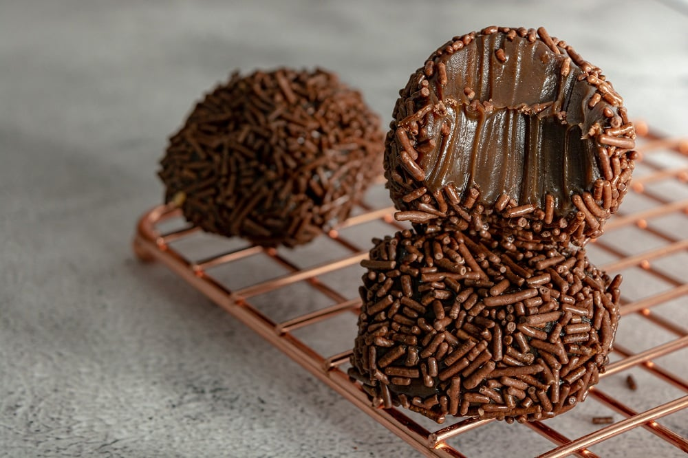

Recettes du Brésil
Découvrez les délices de la cuisine brésilienne avec nos recettes traditionnelles et modernes.
Feijoada

Description : La feijoada est un ragoût de haricots noirs et de viande, souvent de porc, considéré comme le plat national du Brésil. Il est servi avec du riz, des oranges et de la farine de manioc.
Ingrédients :
- 500 g de haricots noirs
- 1 kg de morceaux de porc (travers, saucisses, jambon)
- 2 oignons, hachés
- 4 gousses d'ail, émincées
- 2 feuilles de laurier
- Sel et poivre au goût
- Riz, pour accompagner
- Farine de manioc, pour accompagner
- Oranges tranchées, pour garnir
Instructions :
- Préparer les haricots : Faire tremper les haricots noirs dans l'eau pendant une nuit.
- Cuire les haricots : Égoutter les haricots, puis les cuire dans une grande casserole avec de l'eau fraîche et les feuilles de laurier jusqu'à ce qu'ils soient tendres.
- Faire revenir la viande : Dans une poêle, faire revenir les morceaux de porc avec les oignons et l'ail. Assaisonner avec du sel et du poivre.
- Assembler le ragoût : Ajouter la viande aux haricots et laisser mijoter jusqu'à ce que tout soit bien mélangé et que les saveurs se développent.
- Servir : Servir chaud avec du riz, de la farine de manioc et des tranches d’orange.
Moqueca de Poisson

Description : La Moqueca est un ragoût de poisson à base de lait de coco, de tomates, de poivrons et d'huile de palme, typique du Brésil.
Ingrédients :
- 500 g de filets de poisson (tilapia ou autre)
- 2 tomates, tranchées
- 1 poivron rouge, tranché
- 1 oignon, haché
- 400 ml de lait de coco
- 2 cuillères à soupe d'huile de palme (optionnelle)
- Sel, poivre et coriandre fraîche pour garnir
Instructions :
- Assaisonner le poisson : Assaisonner les filets de poisson avec du sel et du poivre.
- Préparer les légumes : Disposer les tomates, le poivron et l'oignon dans une grande casserole.
- Ajouter le poisson : Placer les filets de poisson par-dessus les légumes et verser le lait de coco.
- Cuire la Moqueca : Ajouter l'huile de palme et faire cuire à feu doux pendant environ 20 minutes.
- Servir : Garnir de coriandre fraîche et servir chaud avec du riz.
Coxinha

Description : La Coxinha est une collation brésilienne populaire, composée d'une pâte frite en forme de goutte, fourrée au poulet et crémeuse.
Ingrédients :
- 500 g de poulet effiloché
- 1 oignon, haché
- 200 g de fromage crémeux (type fromage à tartiner)
- 1 litre de bouillon de poulet
- 500 g de farine de blé
- Chapelure pour enrober
- Huile pour la friture
- Sel et poivre au goût
Instructions :
- Préparer la farce : Faire revenir l'oignon et ajouter le poulet effiloché, assaisonner avec du sel et du poivre, puis incorporer le fromage crémeux.
- Préparer la pâte : Dans une casserole, chauffer le bouillon de poulet jusqu'à ébullition, puis ajouter la farine d'un coup. Mélanger jusqu'à obtenir une pâte homogène.
- Façonner les Coxinhas : Former des boules de pâte, les aplatir, puis ajouter une portion de farce au centre et refermer en donnant une forme de goutte.
- Enrober et frire : Passer chaque coxinha dans la chapelure, puis les frire dans l'huile chaude jusqu'à ce qu'elles soient dorées.
- Servir : Servir chaud en apéritif ou en collation.
Brigadeiro

Description : Le Brigadeiro est un bonbon brésilien fait à base de lait concentré, de beurre et de cacao, roulé dans des vermicelles de chocolat.
Ingrédients :
- 1 boîte de lait concentré sucré (environ 400 g)
- 2 cuillères à soupe de cacao en poudre
- 1 cuillère à soupe de beurre
- Vermicelles de chocolat pour enrober
Instructions :
- Préparer le mélange : Dans une casserole, mélanger le lait concentré, le cacao en poudre et le beurre. Chauffer à feu moyen.
- Cuire le mélange : Remuer constamment jusqu'à ce que le mélange épaississe et se détache du fond de la casserole (environ 10 minutes).
- Refroidir : Laisser refroidir, puis former de petites boules.
- Enrober : Rouler chaque boule dans les vermicelles de chocolat pour bien les enrober.
- Servir : Servir dans des petits moules en papier, en dessert ou en collation.